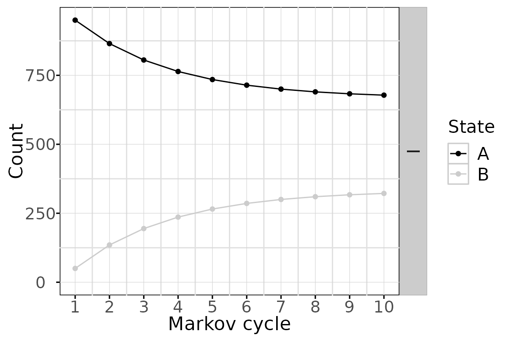

This document is a presentation of the basic steps to define and run
a model in heemod. Note that decision trees are actually a
subset even of Markov model, and thus can be specified easily
with this package.
When building a Markov model the following steps must be performed:
- Specify transition probabilities between states.
- Specify values attached to states (costs, utilities, etc.).
- Combine this information and run the model.
Transition probabilities
The probability to transition from one state to another during a time period is called a transition probability. Said time period is called a cycle.
Transition probabilities between states can be described through a
2-way table where the lines correspond to the states at the beginning of
a cycle and the columns to the states at the end of a cycle. Consider a
model with 2 states A and B:
| A | B | |
|---|---|---|
| A | 1 | 2 |
| B | 3 | 4 |
When starting a cycle in state A (row A), the probability to still be in state A at the end of the cycle is found in colunm A (cell 1) and the probability to change to state B is found in column B (cell 2).
Similarly, when starting a cycle from state B (row B), the probability to be in state A or B at the end of the cycle are found in cells 3 or 4 respectively.
In the context of Markov models, this 2-way table is called a
transition matrix. A transition matrix can be defined easily in
heemod with the define_transition() function.
If we consider the previous example, where cell values have been
replaced by actual probabilities:
| A | B | |
|---|---|---|
| A | 0.9 | 0.1 |
| B | 0.2 | 0.8 |
That transition matrix can be defined with the following command:
mat_trans <- define_transition(
.9, .1,
.2, .8
)## No named state -> generating names.
mat_trans## A transition matrix, 2 states.
##
## A B
## A 0.9 0.1
## B 0.2 0.8Attach values to states
Values are attached to states. Cost and utility are classical examples of such values. To continue with the previous example, the following values can be attachd to state A and B:
- State A has a cost of 1234 per cycle and an utility of 0.85.
- State B has a cost of 4321 per cycle and an utility of 0.50.
A state and its values can be defined with
define_state():
state_A <- define_state(
cost = 1234,
utility = 0.85
)
state_A## A state with 2 values.
##
## cost = 1234
## utility = 0.85
state_B <- define_state(
cost = 4321,
utility = 0.50
)
state_B## A state with 2 values.
##
## cost = 4321
## utility = 0.5Combine information in a model
Now that the transition matrix and the state values are defined for a
given strategy, we can combine them with
define_strategy():
strat <- define_strategy(
transition = mat_trans,
state_A,
state_B
)## No named state -> generating names.
strat## A Markov model strategy:
##
## 2 states,
## 2 state valuesRun the model
A model is a made of one or more strategy, run with
run_model() for a given number of cycles. Here we run only
one strategy, so no comparison of the cost-effectiveness of the
different strategies will be made. The variables corresponding to
valuation of cost and effect must be given at that point.
res_mod <- run_model(
strat,
cycles = 10,
cost = cost,
effect = utility
)## No named model -> generating names.
res_mod## 1 strategy run for 10 cycles.
##
## Initial state counts:
##
## A = 1000L
## B = 0L
##
## Counting method: 'life-table'.
##
##
##
## Counting method: 'beginning'.
##
##
##
## Counting method: 'end'.
##
## Values:
##
## cost utility
## I 19796856 7654.552By default the model is run for 1000 persons starting in the first state (here state A).
Analyse results
We can plot the state membership counts over time. Other plot types are available.
plot(res_mod)
Plots can be modified using ggplot2 syntax.
library(ggplot2)
plot(res_mod) +
xlab("Time") +
ylab("N") +
theme_minimal() +
scale_color_brewer(
name = "State",
palette = "Set1"
)And black & white plots for publication are available with the
bw plot option

The state membership counts and the values can be accessed with
get_counts() and get_values()
respectively.
head(get_counts(res_mod))## .strategy_names model_time state_names count
## 1 I 1 A 950.0000
## 2 I 2 A 865.0000
## 3 I 3 A 805.5000
## 4 I 4 A 763.8500
## 5 I 5 A 734.6950
## 6 I 6 A 714.2865
head(get_values(res_mod))## model_time .strategy_names value_names value
## 1 1 I cost 1388350
## 2 2 I cost 1650745
## 3 3 I cost 1834422
## 4 4 I cost 1962995
## 5 5 I cost 2052997
## 6 6 I cost 2115998Convenience functions
Convenience functions are available to easily compute transition probabilities from indidence rates, OR, RR, or probabilities estimated on a different timeframe.
Example : convert an incidence rate of 162 cases per 1,000 person-years to a 5-year probability.
rate_to_prob(r = 162, per = 1000, to = 5)## [1] 0.5551419See ?probability to see a list of the convenience
functions available.
External data
Mortality rates by age and sex (often used as transition
probabilities) can be downloaded from the WHO online database with the
function get_who_mr().
External data contained in user-defined data frames can be referenced
in a model with the function look_up().
Compare strategies
In order to compare different strategies it is possible to run a
model with multiple strategies in parallel, examples are provided in
vignette("c-homogeneous", "heemod") or
vignette("d-non-homogeneous", "heemod").
Time-variability
Time varying transition probabilities and state values are available
through the model_time and state_time
variables. Time-varying probabilities and values are explained in
vignette("b-time-dependency", "heemod").
Transition costs
Transition costs between states can be defined by adding an
additional state called a transition state. This is a special case of a
tunnel state. A situation where the transtion from A to
B (noted A->B) costs $100 and reduces
utility by 0.1 points compared to the usual values of B can
be modelled by adding a state B_trans.
The cost and utility of B_trans are the same as those of
B +$100 and -0.1 QALY respectively.
A->B_trans is equal to the former value of
A->B. A->B is set to 0 (all transitions
from A to B must pass through
B_trans from now on). The probability to stay in
B_trans is 0, B_trans->B is equal to
B->B and similarly all B_trans->* are
equal to B->*.
Parallel computing
Some operation such as PSA can be significantly sped up using parallel computing. This can be done in the following way:
- Define a cluster with the
use_cluster()functions (i.e.use_cluster(4)to use 4 cores). - Run the analysis as usual.
- To stop using parallel computing use the
close_cluster()function.
Results may vary depending on the machine, but we found speed gains to be quite limited beyond 4 cores.